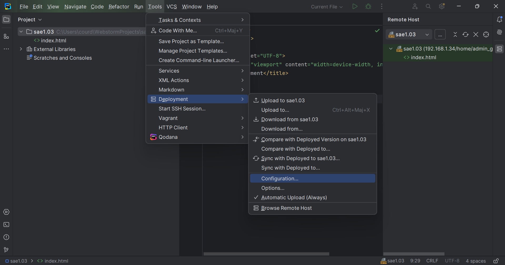

Installation d'un poste pour le développement - Mise en place d'un service web
Installation et configuration d’Apache
Pourquoi Apache ?
Nous avons fait quelques recherches et voici pourquoi il serait plus judicieux selon nous d’utiliser Apache2 que Nginx par exemple :
- plus simple selon plusieurs utilisateurs
- plus vieux
- beaucoup de contenus sur ce service
- plus d’expériences
- plus grosse communauté
- plus d’informations et de contenus sur ce service
- plus d’aide sur différents forums par exemple
Installation d'Apache
Nous avons tout d’abord installé Apache sur notre machine virtuelle via les commandes suivantes :
sudo apt install apache2
sudo service apache2 start
Nous avons ensuite installé un service SSH afin que nous puissions manipuler le service web sur notre machine physique via la commande suivante :
sudo apt install openssh-server
Nous avons ensuite essayé de nous “connecter” via l’invite de commande de notre machine physique à notre machine virtuelle via la commande suivante :
ssh admin_gr106_trinomeg1@[IP]
Nous avons enfin essayé d’afficher la page internet d’accueil d’Apache afin de savoir si le service web avait bien été installé sur notre machine virtuelle en tapant l’IP de notre machine virtuelle dans un navigateur internet. On peut avoir l'IP de notre machine via cette commande :
ip -c addr
Afin que toutes ces étapes fonctionnent, nous avons dû configurer le réseau de notre machine virtuelle sur : “Mode d’accès réseaux : Accès par pont”
Configuration d'Apache
Tout d’abord, nous allons créer un dossier qui contiendra tous les fichiers du site : compterendu.fr dans lequel nous créons dès à présent un fichier en .html de “test” qui affiche uniquement une phrase.
Nous avons ensuite créé un lien symbolique avec le dossier créé plus tôt via la commande suivante dans le dossier de la machine virtuelle /srv :
sudo ln -s /home/admin_gr106_trinomeg1/compterendu.fr compterendu.fr
On ajoute aussi des permissions aux “other” de lire et d’exécuter le dossier /home/admin_gr106_trinomeg1 afin qu’Apache2 puisse accéder à ce dossier et ainsi pouvoir afficher notre site :
chmod o+r admin_gr106_trinomeg1
chmod o+x admin_gr106_trinomeg1
Nous avons ensuite commencé la véritable configuration d’Apache2 pour qu’il puisse afficher donc le dossier compterendu.fr comme site web.
Nous avons d’abord commencé par modifier le fichier apache2.conf :
sudo nano /etc/apache2/apache2.conf
On ajoute la directive suivante afin que l’utilisateur Apache2 puisse accéder au dossier /srv/ :
<Directory /srv/>
Options FollowSymLink
AllowOverrite None
Require all granted
</Directory>
On a ensuite modifié le fichier /etc/apache2/sites-available/000-default.conf en modifiant la directive DocumentRoot comme suit :
DocumentRoot /srv/compterendu.fr
Nous avons enfin redémarré Apache2 pour qu’il puisse appliquer toutes ces modifications via la commande suivante :
sudo systemctl reload apache2.service
On peut désormais vérifier en tapant l’IP de la machine virtuelle sur un navigateur. On peut connaître l’adresse IP de la machine via la commande suivante :
ip -c addr
Configuration de WebStorm pour le déploiement
Nous allons utiliser l’outil de déploiement directement intégré à WebStorm pour déployer les fichiers sur le serveur web que nous venons de configurer à chaque modification. 